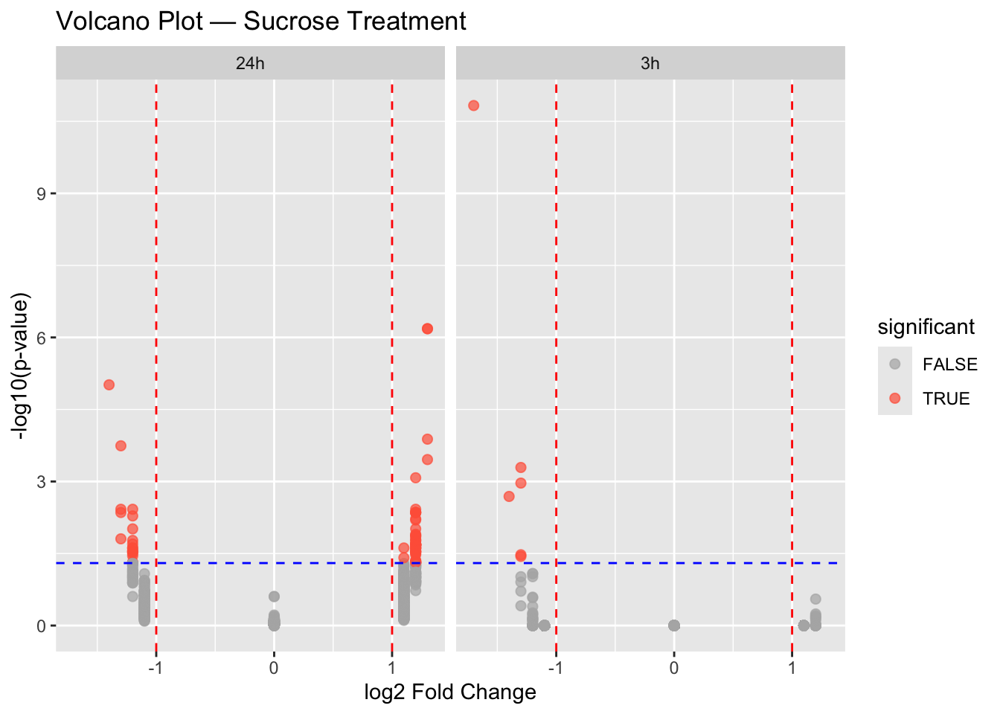
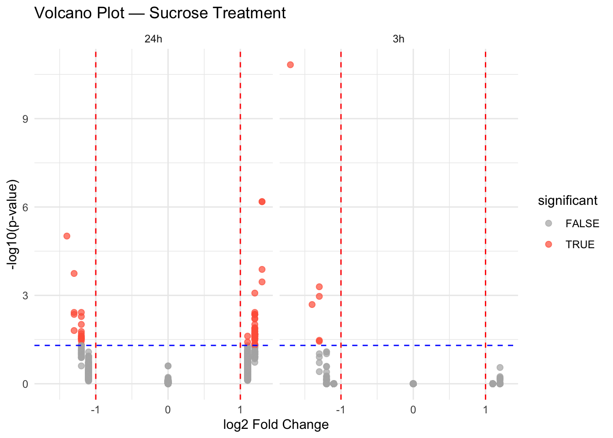
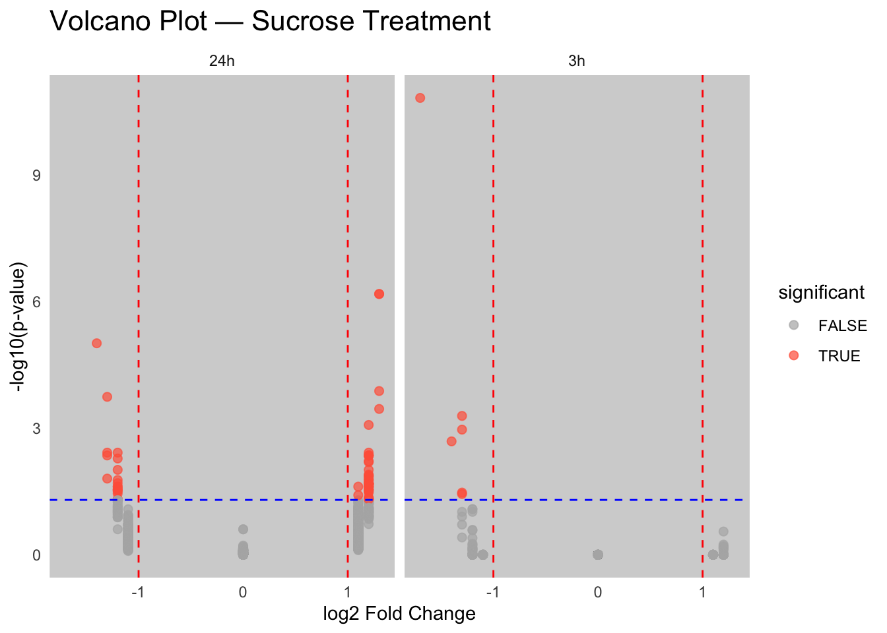
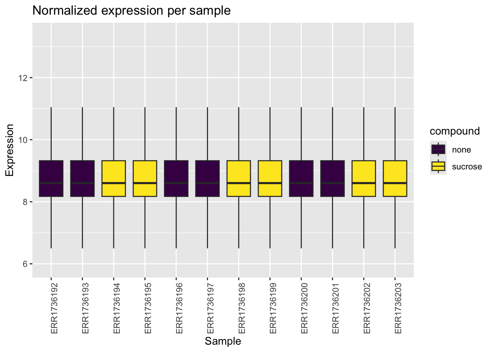
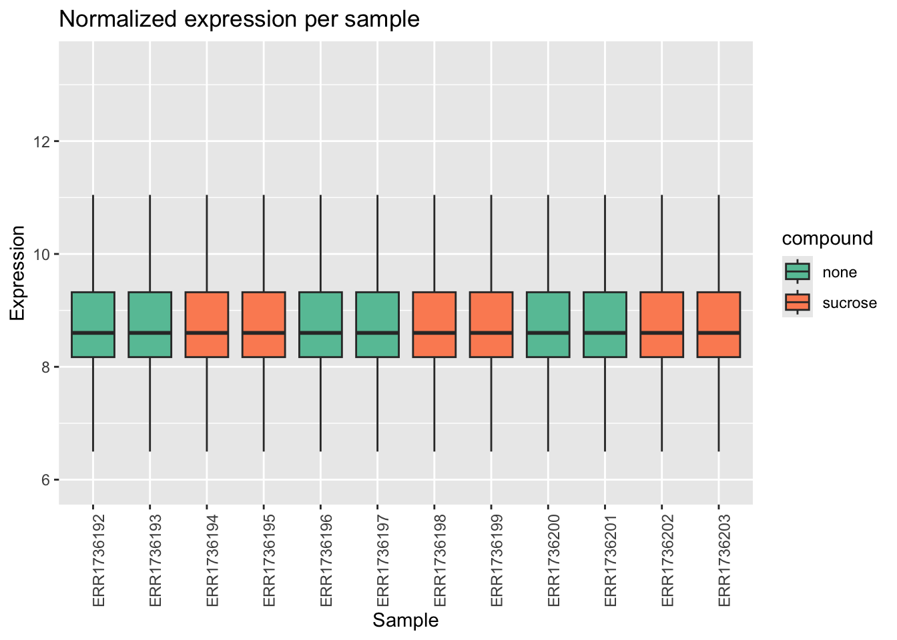
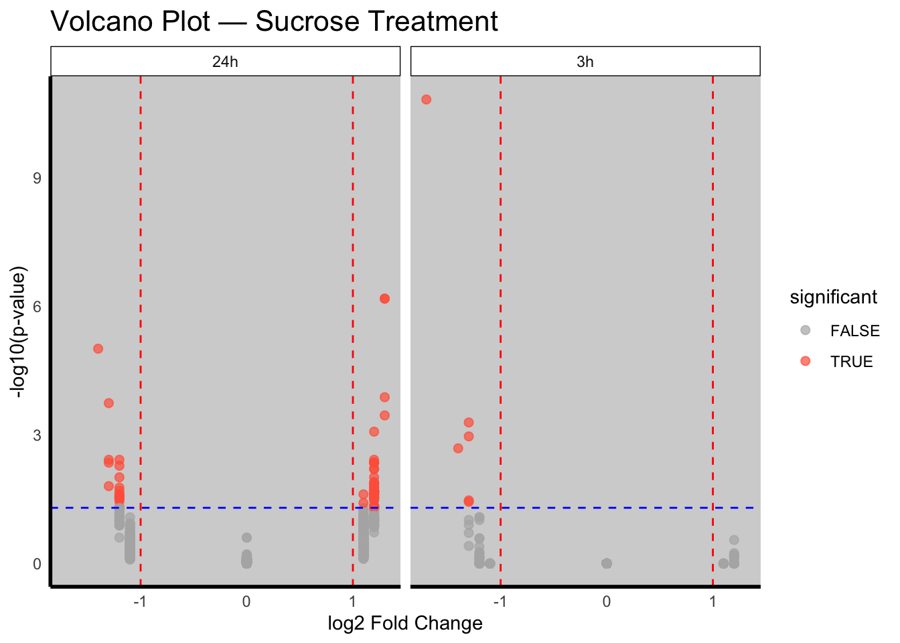

renv::install("RColorBrewer")
renv::install("viridis")Exercise - Block 3
Introduction to ggplot2 advanced topics
In the last block, we learned the basics of ggplot2. In this block, we will explore more advanced topics to make our plots publication-ready. We will cover:
- Faceting: Creating subplots to compare different subsets of your data.
- Themes: Customizing the appearance of your plots.
- Colors: Using colors effectively and exploring different color palettes.
Installing packages
Packages
library(ggplot2)
library(patchwork)
library(RColorBrewer)
library(viridis)Exploratory data analysis
data <- readRDS(gzcon(url(
"https://raw.githubusercontent.com/urppeia/publication_figs/main/data.rds"
)))Faceting
In Block 2, we created two separate volcano plots for the 3h and 24h timepoints. We can use faceting to create a single plot with two panels.
Exercise 1
Create a single volcano plot faceted by timepoint.
Tip
# Create a single data frame for both timepoints
diff_df <- data.frame(
lfc = c(data$diff$sucrose_3h_lfc, data$diff$sucrose_24h_lfc),
pval = c(data$diff$sucrose_3h_pval, data$diff$sucrose_24h_pval),
timepoint = rep(c("3h", "24h"), each = nrow(data$diff))
)
diff_df$significant <- diff_df$pval < 0.05 & abs(diff_df$lfc) > 1
ggplot(diff_df, aes(x = lfc, y = -log10(pval), color = significant)) +
geom_point(size = 2, alpha = 0.7) +
scale_color_manual(values = c("gray70", "tomato")) +
geom_vline(xintercept = c(-1, 1), linetype = "dashed", color = "red") +
geom_hline(yintercept = -log10(0.05), linetype = "dashed", color = "blue") +
labs(
title = "Volcano Plot — Sucrose Treatment",
x = "log2 Fold Change",
y = "-log10(p-value)"
) +
facet_wrap(~timepoint)
Themes
ggplot2 comes with several built-in themes. You can also create your own themes to have full control over the appearance of your plots.
Exercise 2
A. Apply the theme_minimal() to the faceted volcano plot.
Tip
ggplot(diff_df, aes(x = lfc, y = -log10(pval), color = significant)) +
geom_point(size = 2, alpha = 0.7) +
scale_color_manual(values = c("gray70", "tomato")) +
geom_vline(xintercept = c(-1, 1), linetype = "dashed", color = "red") +
geom_hline(yintercept = -log10(0.05), linetype = "dashed", color = "blue") +
labs(
title = "Volcano Plot — Sucrose Treatment",
x = "log2 Fold Change",
y = "-log10(p-value)"
) +
facet_wrap(~timepoint) +
theme_minimal()
B. Customize the theme. Make the following changes: * Increase the title font size to 16. * Remove the panel grid lines. * Change the panel background to light gray.
Tip
ggplot(diff_df, aes(x = lfc, y = -log10(pval), color = significant)) +
geom_point(size = 2, alpha = 0.7) +
scale_color_manual(values = c("gray70", "tomato")) +
geom_vline(xintercept = c(-1, 1), linetype = "dashed", color = "red") +
geom_hline(yintercept = -log10(0.05), linetype = "dashed", color = "blue") +
labs(
title = "Volcano Plot — Sucrose Treatment",
x = "log2 Fold Change",
y = "-log10(p-value)"
) +
facet_wrap(~timepoint) +
theme_minimal() +
theme(
plot.title = element_text(size = 16),
panel.grid = element_blank(),
panel.background = element_rect(fill = "lightgray", color = NA)
)
Colors
Colors are a powerful tool in data visualization. ggplot2 provides many ways to work with colors.
Exercise 3
Let’s go back to the boxplot of expression data.
data_long <- merge(data$anno, reshape2::melt(data$counts))Using Gene_ID as id variablesA. Use a color palette from RColorBrewer.
Tip
ggplot(data_long, aes(x = Sample_ID, y = value, fill = compound)) +
geom_boxplot(outlier.shape = NA) +
theme(axis.text.x = element_text(angle = 90, hjust = 1)) +
labs(
title = "Normalized expression per sample",
x = "Sample",
y = "Expression"
) +
scale_fill_brewer(palette = "Set2")
B. Use the viridis color palette.
Tip
ggplot(data_long, aes(x = Sample_ID, y = value, fill = compound)) +
geom_boxplot(outlier.shape = NA) +
theme(axis.text.x = element_text(angle = 90, hjust = 1)) +
labs(
title = "Normalized expression per sample",
x = "Sample",
y = "Expression"
) +
scale_fill_viridis_d()
C. Specify colors manually.
Tip
ggplot(data_long, aes(x = Sample_ID, y = value, fill = compound)) +
geom_boxplot(outlier.shape = NA) +
theme(axis.text.x = element_text(angle = 90, hjust = 1)) +
labs(
title = "Normalized expression per sample",
x = "Sample",
y = "Expression"
) +
scale_fill_manual(values = c("none" = "#66c2a5", "sucrose" = "#fc8d62"))
Saving plots for publication
When preparing figures for publication, journals often have strict requirements for file format, dimensions, and resolution.
Exercise 4
Let’s save the faceted volcano plot from Exercise 2B.
A. Save the plot as a PNG file with a width of 8 inches, a height of 4 inches, and a resolution of 300 dpi.
Tip
volcano_plot <- ggplot(diff_df, aes(x = lfc, y = -log10(pval), color = significant)) +
geom_point(size = 2, alpha = 0.7) +
scale_color_manual(values = c("gray70", "tomato")) +
geom_vline(xintercept = c(-1, 1), linetype = "dashed", color = "red") +
geom_hline(yintercept = -log10(0.05), linetype = "dashed", color = "blue") +
labs(
title = "Volcano Plot — Sucrose Treatment",
x = "log2 Fold Change",
y = "-log10(p-value)"
) +
facet_wrap(~timepoint) +
theme_minimal() +
theme(
plot.title = element_text(size = 16),
panel.grid = element_blank(),
panel.background = element_rect(fill = "lightgray", color = NA)
)
ggsave("volcano_plot.png", plot = volcano_plot, width = 8, height = 4, dpi = 300)B. Save the plot as a PDF file. PDF is a vector format, which is ideal for publications as it can be scaled without losing quality.
Tip
ggsave("volcano_plot.pdf", plot = volcano_plot, width = 8, height = 4)Warning in grid.Call.graphics(C_text, as.graphicsAnnot(x$label), x$x, x$y, :
for 'Volcano Plot — Sucrose Treatment' in 'mbcsToSbcs': - substituted for —
(U+2014)C. Save the plot as a TIFF file.
Tip
ggsave("volcano_plot.tiff", plot = volcano_plot, width = 8, height = 4, dpi = 300)Fine-tuning stylistic elements
Journals often have specific guidelines for fonts and line weights.
Exercise 5
Let’s modify the volcano plot to meet some hypothetical publication guidelines.
A. Change the font family to “Arial”.
Tip
volcano_plot +
theme(text = element_text(family = "Arial"))B. Adjust the line weights. Make the axis lines thicker (size = 1) and the facet borders thinner (size = 0.5).
Tip
volcano_plot +
theme(
text = element_text(family = "Arial"),
axis.line = element_line(linewidth = 1),
strip.background = element_rect(linewidth = 0.5)
)
Session information
Tip
sessionInfo()R version 4.5.1 (2025-06-13)
Platform: aarch64-apple-darwin20
Running under: macOS Tahoe 26.0.1
Matrix products: default
BLAS: /Library/Frameworks/R.framework/Versions/4.5-arm64/Resources/lib/libRblas.0.dylib
LAPACK: /Library/Frameworks/R.framework/Versions/4.5-arm64/Resources/lib/libRlapack.dylib; LAPACK version 3.12.1
locale:
[1] en_US.UTF-8/en_US.UTF-8/en_US.UTF-8/C/en_US.UTF-8/en_US.UTF-8
time zone: Europe/Zurich
tzcode source: internal
attached base packages:
[1] stats graphics grDevices datasets utils methods base
other attached packages:
[1] viridis_0.6.5 viridisLite_0.4.2 RColorBrewer_1.1-3 patchwork_1.3.2
[5] ggplot2_4.0.0
loaded via a namespace (and not attached):
[1] gtable_0.3.6 jsonlite_2.0.0 dplyr_1.1.4
[4] compiler_4.5.1 BiocManager_1.30.26 renv_1.1.5
[7] Rcpp_1.1.0 tidyselect_1.2.1 stringr_1.5.2
[10] gridExtra_2.3 textshaping_1.0.4 systemfonts_1.3.1
[13] scales_1.4.0 yaml_2.3.10 fastmap_1.2.0
[16] plyr_1.8.9 R6_2.6.1 labeling_0.4.3
[19] generics_0.1.4 knitr_1.50 htmlwidgets_1.6.4
[22] tibble_3.3.0 pillar_1.11.1 rlang_1.1.6
[25] stringi_1.8.7 xfun_0.53 S7_0.2.0
[28] cli_3.6.5 withr_3.0.2 magrittr_2.0.4
[31] digest_0.6.37 grid_4.5.1 rstudioapi_0.17.1
[34] lifecycle_1.0.4 vctrs_0.6.5 evaluate_1.0.5
[37] glue_1.8.0 farver_2.1.2 ragg_1.5.0
[40] reshape2_1.4.4 rmarkdown_2.30 tools_4.5.1
[43] pkgconfig_2.0.3 htmltools_0.5.8.1